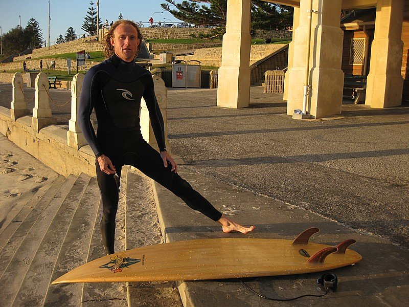

The Long Run - Across Australia 2011
I made this trip in May 2011.
The original trip report posted on a forum was hacked so this is being restored on my own website .
Hope you enjoy it !
The bike trip was from Perth along the coast of Oz to Adelaide then north to Queensland.
To get to Perth I flew through Toronto , Tokyo and Singapore.
We crossed over the Kamchatka peninsula in Siberia , it was all ice and snow.
Coming into Japan when we crossed green mountains norteast of Tokyo , I realised some coastal areas below me were probably destroyed by the huge tidal waves one year ago.
When we landed at Narita we taxied in from an outlying runway, the plane
literally passed through suburbs close to the fence, farm crops were only feet
away from the wing tips. I could look into workshops and garages fixing cars,
they were that close.
When we landed at Narita we taxied in from an outlying runway, the plane
literally passed through suburbs close to the fence, farm crops were only feet
away from the wing tips. I could look into workshops and garages fixing cars,
they were that close.

In the terminal I had 2 hours to kill, the vending machines were quite amazing.

I was impressed with the washroom, super clean regardless of the style.
I only
wished I had more time to see Japan , especially the countryside. It
looked very pretty.

testing dfgghhh ghhhhhhhh gggggggttt
